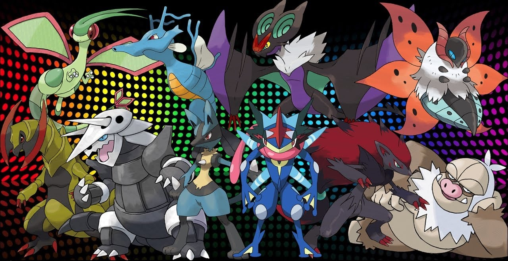

Semi Pseudo-legendario
El termino "Semi Pseudo-legendario" es utilizado para referirse a Pokémon que suelen ser confundidos con los Pseudo-legendarios debido a su rareza y a que son también muy poderosos, aunque sus Estadísticas Base sumadas son menores a 600 (a excepción de Slaking y Greninja Ash, cuyas Estadísticas Base totales son de 670 y 640, respectivamente).
